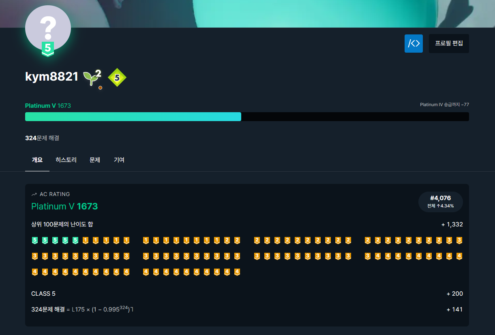

BOJ
BOJ는 다양한 자료구조 / 알고리즘 문제들을 모아놓은 코딩 문제 은행입니다.
제가 코딩을 시작한 출발점이자, 현재까지도 취미로써 애정을 갖고 하고 있는 공부이기도 합니다.
요즘에는 과제와 프로젝트 때문에 바빠서 못하고 있지만 가끔씩 들어가서 문제 정도는 확인하고 있습니다.
제가 코딩을 시작한 출발점이자, 현재까지도 취미로써 애정을 갖고 하고 있는 공부이기도 합니다.
요즘에는 과제와 프로젝트 때문에 바빠서 못하고 있지만 가끔씩 들어가서 문제 정도는 확인하고 있습니다.
백준을 포함해서 백준과 연동되는 유용한 사이트 하나를 추천해드리겠습니다.
solved.ac 라는 사이트인데, 문제를 태그별, 난이도별로 확인할 수 있기 때문에 효율적으로 공부할 수 있습니다.
또한, 문제를 풀면 경험치가 쌓이고 그에 따라서 티어를 할당하므로, 내가 어느정도 수준인지를 확인할 수 있습니다.

옆에 있는 사진이 solved.ac에서의 제 계정입니다.
사진처럼, solved.ac에서는 경험치 양에 따라 티어가 할당됩니다.
또한, 절대적인 수치는 아니지만 대략적인 수준도 알 수 있습니다.
솔직히 이러한 점 때문에 백준이 재미있었던 것 같습니다.
티어를 올리기 위해 다양한 알고리즘과 자료구조를 공부했고, 그렇게 해서 어려운 문제를 풀었을 때는 묘한 쾌감이 있었습니다.
군대에서는 상병 말부터 근무 때 백준 문제 몇개 갖고 가서 근무 시간을 녹이기도 했습니다. (이거라도 안하면 미쳐요 진짜...)
사진처럼, solved.ac에서는 경험치 양에 따라 티어가 할당됩니다.
또한, 절대적인 수치는 아니지만 대략적인 수준도 알 수 있습니다.
솔직히 이러한 점 때문에 백준이 재미있었던 것 같습니다.
티어를 올리기 위해 다양한 알고리즘과 자료구조를 공부했고, 그렇게 해서 어려운 문제를 풀었을 때는 묘한 쾌감이 있었습니다.
군대에서는 상병 말부터 근무 때 백준 문제 몇개 갖고 가서 근무 시간을 녹이기도 했습니다. (이거라도 안하면 미쳐요 진짜...)
사실 이것도 거의 저 혼자 하고 있으니 좀 외롭습니다.
만약 백준을 시작해야 한다거나, 아니면 지금 하고 있는 분들 있으면 저랑 같이해주세요.
같이 코드도 공유하고, 좋은 문제도 공유하면서 공부해보고 싶습니다.
만약 백준을 시작해야 한다거나, 아니면 지금 하고 있는 분들 있으면 저랑 같이해주세요.
같이 코드도 공유하고, 좋은 문제도 공유하면서 공부해보고 싶습니다.